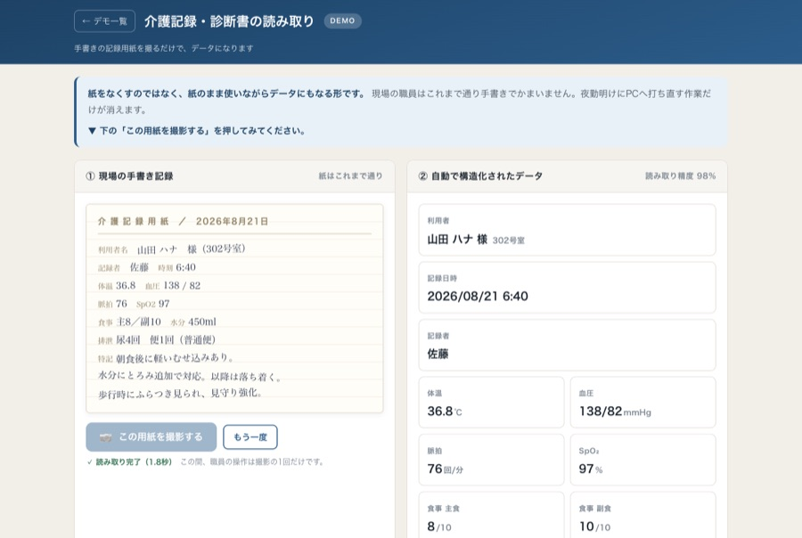
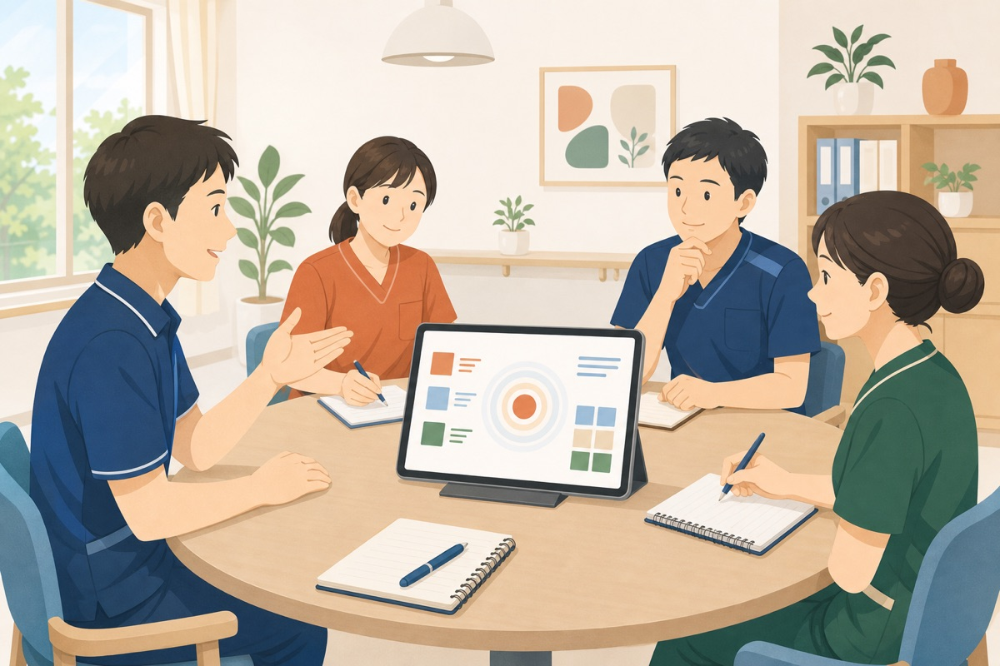
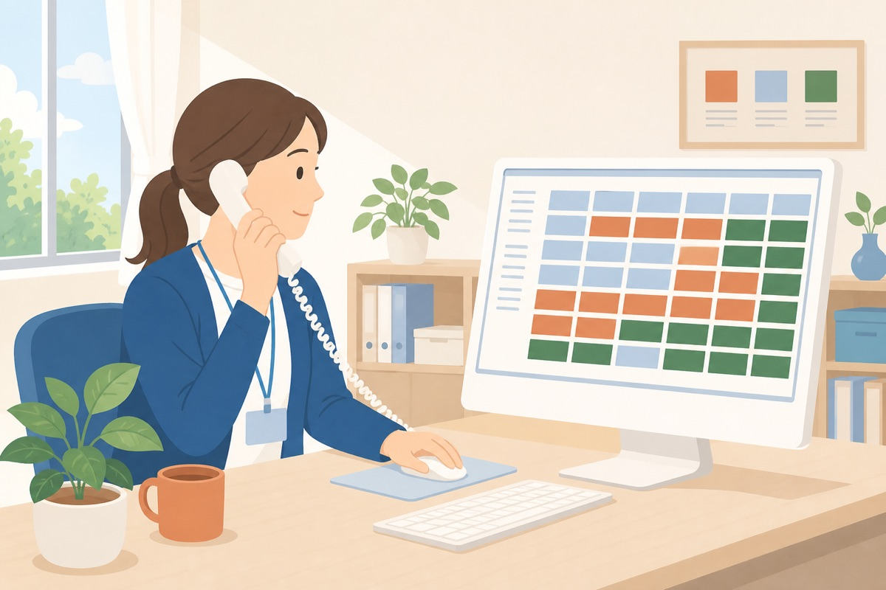
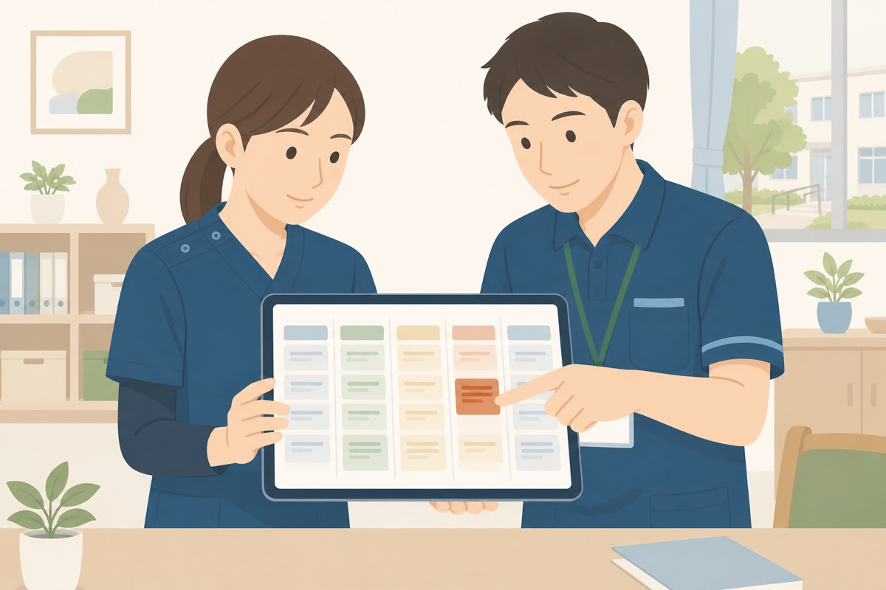
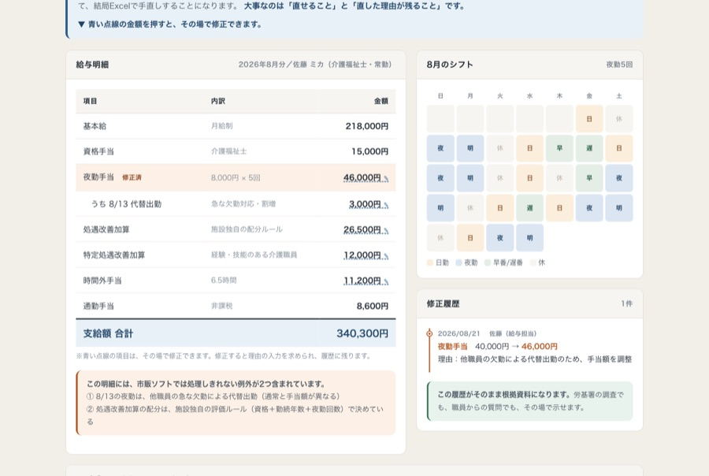
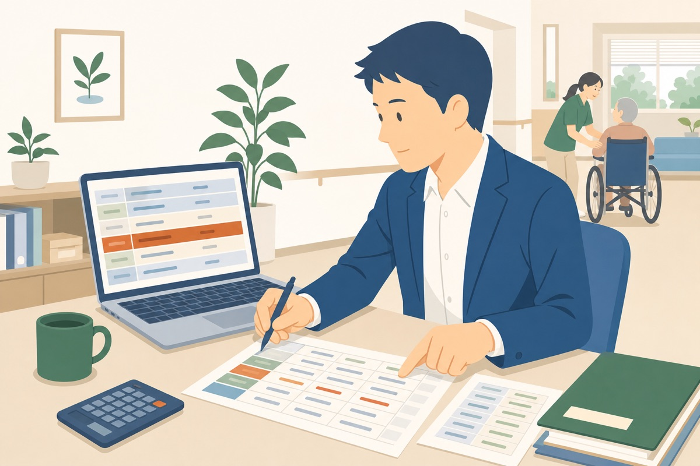
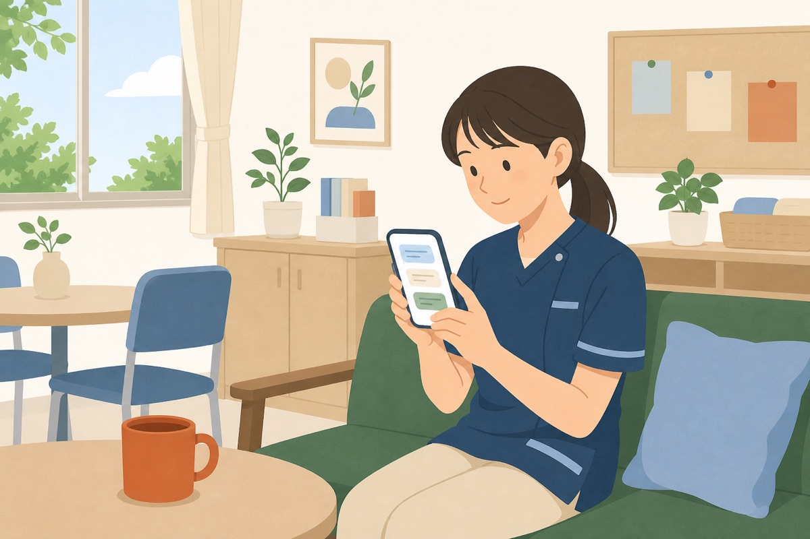
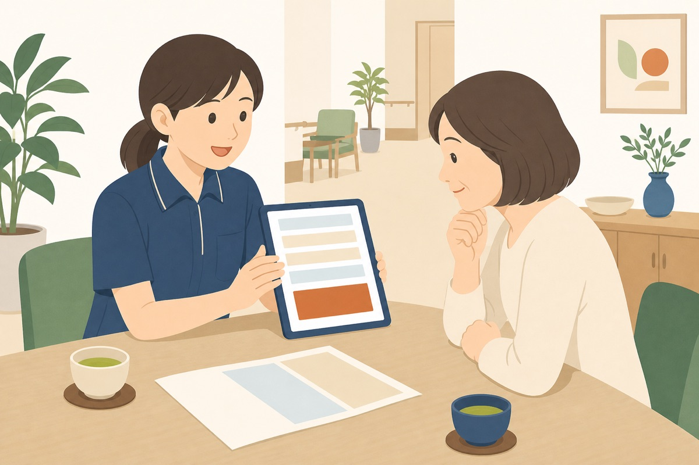

説明より、触っていただくほうが早いと思います。画像を押すと、そのまま操作できる画面が開きます。
スマホでもタブレットでも動きます。登場する氏名・数値はすべて架空のサンプルです。

いま：手書きの記録を、あとからPCに打ち直している。夜勤明けの職員が30分残って入力。
手書きの記録用紙を撮るだけで、バイタルも食事量も自動で構造化。加算の記録漏れも一覧で分かります。
撮って読み取ってみる →

いま：議事録づくりに毎回1時間。病歴や家族の事情が入るのでクラウドは怖くて使えない。
録音するだけで要約・決定事項・宿題まで自動整理。処理は施設内で完結し、外に出ません。
録音して要約してみる →

いま：空室が出てから慌てて探す。紹介元への連絡が担当者の記憶頼み。
空室と待機の方が一目で分かり、空きが出たら紹介元へ自動連絡。どこからの紹介が多いかも数字で見えます。
空室を出してみる →

いま：問い合わせがメモ用紙のまま。「あの方どうなった？」が担当者の記憶頼み。
問い合わせから入居までを1本の流れで管理。放置されている案件が赤で浮かび上がります。
案件を動かしてみる →

いま：夜勤手当、処遇改善加算、変則シフト。市販ソフトははみ出して、結局Excelで手直し。
自動計算に人を合わせるのではなく、その場で直せて、直した理由が履歴に残ります。
金額を直してみる →

いま：「最近どうですか」の電話でそのつど手が止まる。満足度調査は集計する手間がない。
写真を選んで送るだけでLINEに配信。アンケートは集計まで自動で出ます。
配信して集計を見る →

いま：辞める理由は辞めてから分かる。就業規則の質問が管理者に集中する。
就業規則はAIが参照元つきで即答。言いづらい相談は匿名のまま届きます。
LINEで聞いてみる →

いま：「あとで見積もりをお送りします」と言って、その日のうちに決まらない。
選ぶだけでその場で見積書が出ます。ご家族が帰るときに紙で持って帰れます。
見積書を出してみる →